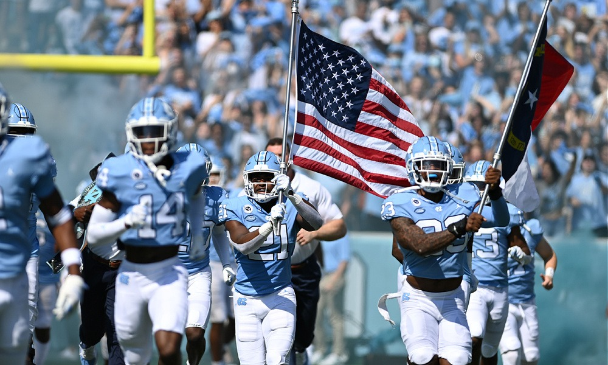

People are drawn to basketball for various reasons. First and foremost, the sport offers a unique blend of athleticism, skill, and strategy that captivates both players and spectators alike. The fast-paced nature of the game, with its high-flying dunks, precision passing, and intense competition, creates an electrifying atmosphere. Basketball also fosters a sense of community, with fans rallying behind their favorite teams and players, fostering a shared passion and camaraderie. Additionally, the sport provides opportunities for individuals to showcase their individual talents and rise to the occasion in clutch moments, making it thrilling and inspiring to watch.

People are drawn to football for several reasons. Firstly, the sport provides a thrilling sense of competition and teamwork that captivates both players and spectators. The strategic nature of the game, with its intricate tactics and plays, offers a captivating experience for fans. Additionally, football has a unique ability to bring people together, fostering a strong sense of community and camaraderie. The emotional highs and lows, the passion of the fans, and the electrifying atmosphere of a live match contribute to the overall appeal. Lastly, football's universal popularity and widespread coverage make it a cultural phenomenon that transcends borders and unites people from diverse backgrounds.